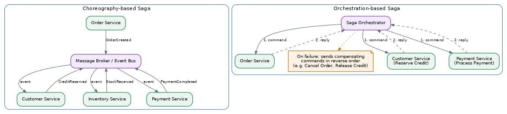
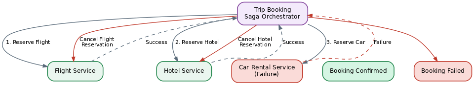

Saga Pattern
Table of Contents
Overview
Picture an online store where placing a single order actually touches three different systems: an order system, a payment system, and an inventory system. In a microservices architecture, each of these lives as its own service with its own separate database, and the Saga pattern is the standard way of keeping all of these independent pieces in agreement with each other even though no single database ties them together.
A saga, at its core, is simply a sequence of small, local transactions. Each local transaction runs inside one service and updates only that service's own database; when a step finishes successfully, it triggers the next step in the chain, and once every step has succeeded, the overall business transaction — placing the order — is considered complete. The name traces back to an old academic idea about long-running transactions, but the version used in microservices today is much simpler in spirit: break one big transaction into many small, safe steps, and have a clear plan for undoing things if one of those steps fails partway through. Data consistency across services is one of the very first hard problems any team runs into once a monolith is split apart, which is exactly why the Saga pattern is such a frequent interview topic.
The Problem: Traditional Transaction Models
A traditional single-database application leans on ACID transactions — Atomicity, Consistency, Isolation, and Durability, a set of guarantees the database provides. Atomicity in particular means "all or nothing": either every change in the transaction is saved, or none of them are. If a bank transfer fails halfway through, the database automatically rolls everything back, so no money magically disappears or gets duplicated.
That guarantee works beautifully when everything lives in one database. But in microservices, each service typically owns its own database, and no other service is allowed to reach into it directly — the "database per service" pattern, adopted on purpose to keep services independent and loosely coupled, so a change in one service doesn't force changes in another.
The classic way to coordinate a transaction spanning multiple databases is the two-phase commit, or 2PC. In phase one, a coordinator asks every participating database "are you ready to commit?"; in phase two, if everyone said yes, the coordinator tells them all to actually commit — and if even one says no, everyone rolls back. The trouble is that 2PC does not fit microservices well: it requires every database to stay locked and waiting for the whole process, which hurts performance and availability; many modern databases, especially NoSQL ones, don't support it at all; and it creates tight coupling between services at exactly the moment the architecture is trying to make them independent. For these reasons, 2PC is generally considered impractical for real-world microservice systems.
The Saga Pattern: A Solution
The Saga pattern solves this by giving up instant, all-or-nothing consistency in exchange for eventual consistency — the system will become consistent, just not necessarily in the same instant. Instead of one big cross-service transaction, a saga is built from a chain of small local transactions, each owned entirely by one service. Each local transaction does two things: it updates its own database, and it announces that it's done, either by publishing an event or replying to whoever requested the work — and that announcement is what triggers the next local transaction in the chain to start.
The tricky part is what happens when something goes wrong partway through. Since there's no automatic database rollback spanning multiple services, the Saga pattern relies on compensating transactions: a compensating transaction is simply another local transaction whose job is to logically undo the effect of an earlier step. If a payment step fails after inventory was already reserved, for example, a compensating transaction would "un-reserve" that inventory. It's worth being clear that a compensating transaction doesn't always mean a perfect rewind of history — sometimes undoing something means issuing a refund or an apology email rather than truly erasing what happened, because the earlier step may already be visible to the outside world.
The Architecture: Choreography vs. Orchestration
There are two well-known ways to structure and coordinate a saga — choreography and orchestration. Both solve the same problem, but they organize "who is in charge" very differently.
In a choreography-based saga, there is no central controller. Each service listens for events published by other services, performs its own local transaction when it hears the right event, and then publishes its own event for the next service to react to — a bit like a group of dancers who all know the steps and react to each other's movements without a director standing in the middle. This keeps services loosely coupled and avoids a single point of failure, but as more services join the saga, it becomes progressively harder to see the "big picture" of the whole flow just by reading each service's code in isolation.
In an orchestration-based saga, one component — the orchestrator — knows the entire recipe for the transaction. It explicitly tells each service what to do next, waits for a reply, and decides whether to move forward or start running compensating transactions, much like a conductor directing an orchestra. This is easier to understand, test, and monitor, because the whole flow lives in one place — but the orchestrator itself can become a bottleneck or a single point of failure if it isn't built to be highly available.

The Inner Workings
Under the hood, a saga runs like a relay race: step one starts, finishes, and hands off a baton — an event or a command — to step two, and so on, until the last step finishes or something breaks the chain.
Because a service must both update its own database and publish an event or message as part of the same piece of work, teams often need extra help making that reliable. If the database update succeeds but the event never actually gets published — say, the service crashes right after saving — the rest of the saga simply never hears about it. A common companion pattern here is the Transactional Outbox pattern, where the event to be published is saved in the same database transaction as the business data, and a separate process reliably delivers it afterward.
Two other technical details matter a great deal in practice. First, saga participants need to be idempotent — if the same message is accidentally processed twice, which can happen with retries, the result should be the same as processing it once, with no double charging and no double shipping. Second, because sagas don't have the "isolation" guarantee that ACID transactions have, two sagas running at the same time can sometimes interfere with each other's data; architects use techniques such as semantic locking — marking a record as "pending" so other sagas know to wait or react differently — to reduce this risk.
When a failure happens partway through, the system — whether it's an orchestrator or the next service in a choreography chain — triggers compensating transactions in reverse order, undoing the most recently completed step first, then the one before it, and so on, until the system is back to a safe, consistent state.
An Example: Approving an Order
Consider a simple e-commerce scenario: a customer places an order, and the system must reserve their credit before approving it. Cleaned up into a step-by-step form, the choreography-based version looks like this:
Choreography-based saga: approving an order
1. OrderService.receive(POST /orders)
-> create Order { status: PENDING }
2. OrderService.publish(OrderCreated)
3. CustomerService.onEvent(OrderCreated)
-> reserveCredit(customerId, orderAmount)
4. CustomerService.publish(CreditReserved)
-- or, if the reservation fails --
CustomerService.publish(CreditReservationFailed)
5. OrderService.onEvent(CreditReserved)
-> Order.status = APPROVED
OrderService.onEvent(CreditReservationFailed)
-> Order.status = REJECTEDThe orchestration-based version achieves the same outcome, but a dedicated orchestrator drives every step instead of services reacting to each other's events directly:
Orchestration-based saga: approving an order
1. OrderService.receive(POST /orders)
-> start CreateOrderSaga (orchestrator)
2. CreateOrderSaga.step()
-> create Order { status: PENDING }
3. CreateOrderSaga.send(ReserveCredit -> CustomerService)
4. CustomerService.reserveCredit(customerId, orderAmount)
-> reply(success | failure) to CreateOrderSaga
5. CreateOrderSaga.onReply(success)
-> Order.status = APPROVED
CreateOrderSaga.onReply(failure)
-> compensate: CancelOrderNow stretch the same idea into a longer saga with three steps: Order → Inventory → Payment. If the "Make Payment" step fails, the system doesn't just stop — it walks the chain backward, running compensating transactions in reverse order:
Longer saga: Order -> Inventory -> Payment
Happy path:
1. Order.create() succeeds
2. Inventory.reserveStock() succeeds
3. Payment.makePayment() succeeds
-> saga complete, order CONFIRMED
Failure path (Payment fails):
1. Order.create() succeeded earlier
2. Inventory.reserveStock() succeeded earlier
3. Payment.makePayment() FAILS
4. compensate: Inventory.revertInventory() // put the stock back
5. compensate: Order.removeOrder() // cancel the order
-> system returns to a clean, consistent statePerformance Implications
Sagas trade instant consistency for better availability and independence between services, but this trade-off carries real performance and design costs. Because each step waits on a message or event from the previous step, a saga with many steps can take noticeably longer to fully complete than a single local database transaction would.
When something does fail, running the chain of compensating transactions adds even more latency, since the system has to "walk back" through several already-completed steps. For this reason, architects are usually advised not to make the client wait synchronously for a long saga to finish end-to-end; instead, the client is typically given an order ID immediately and can poll for status, receive a callback, or get a push notification once the saga eventually completes.
Observability becomes especially important with sagas: since a single business transaction is now spread across several services and messages, good logging, tracing, and correlation IDs — a shared identifier tying all the related messages together — are needed just to answer the simple question "did my saga finish, and if not, where did it get stuck?" Debugging complexity grows as the number of participants grows, which is one reason very long choreography chains are often refactored into an orchestrated design. And because sagas lack the isolation property of ACID transactions, extra countermeasures like semantic locking may be needed under high concurrency, adding a bit of overhead and design effort in exchange for correctness.
System Design Examples
Sagas show up anywhere a single user action must coordinate several independent services, each with its own database:
- E-commerce checkout: placing an order touches an Order Service, an Inventory Service (reserve stock), and a Payment Service (charge the card), with compensations like releasing stock or refunding a payment if a later step fails.
- Travel booking: booking a trip might need to reserve a flight, a hotel room, and a rental car from three completely different providers or services; if the hotel booking fails after the flight was reserved, the saga compensates by cancelling the flight reservation.
- Banking money transfer between banks: withdrawing from one account and depositing into another, possibly at a different bank or service, needs a saga-like flow with a compensating "refund" step if the deposit side fails.

Conclusion
The Saga pattern lets microservices keep their independent databases while still coordinating multi-step business transactions safely. It replaces the all-or-nothing rollback of ACID transactions with a deliberate sequence of local transactions plus compensating transactions that undo earlier work when something fails. Either way you coordinate it, adopting sagas means accepting eventual consistency, planning carefully for failure with idempotent and well-tested compensating transactions, and investing in good observability so that when something does go wrong, the team can actually see what happened and why.